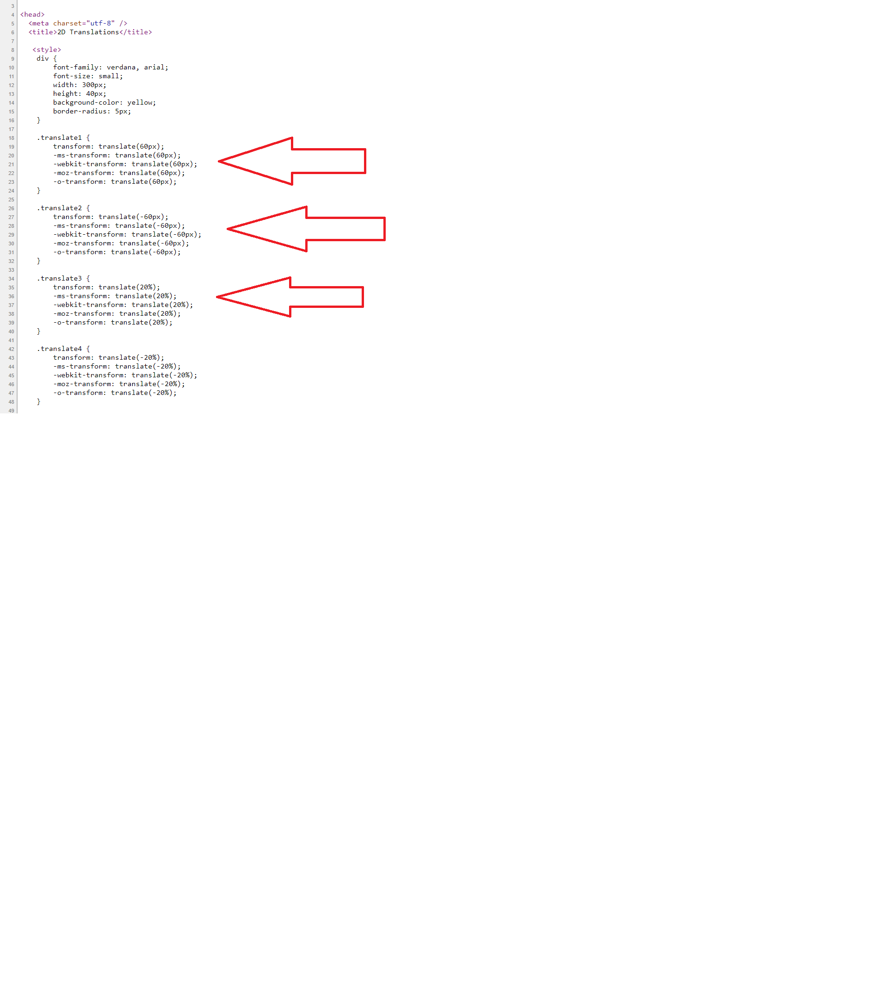

Module 12: Animating the User Interface
Lesson 1: Applying CSS Transitions
Demonstration: Using CSS Transitions
Place the mouse pointer over the upper rectangle on the web page. Verify that the following transitions are applied simultaneously to the rectangle:
- The width, height, and font size increase over a period of two seconds.
- The background color transitions to red over a period of 3.75 seconds
In View Source check the code for the div elements (div.simple, div.complex and div.hover),
which allowed the transitions.
Lesson 2: Transforming Elements
Demonstration: Performing 2D Transformations
Check in View Source the standard transform property as well as the following vendor-specific properties:
ms-transform: Perform a transformation on Microsoft Edge
-webkit-transform: Perform a transformation on Webkit-based browsers such as Chrome and Safari
-moz-transform: Perform a transformation on Mozilla browsers
-o-transform: Perform a transformation on Opera browsers.

Perform 2D Scaling Transformations
Perform 2D Rotations
Perform 2D Skewing Transformations
Demonstration: Performing 3D Transformations
Perform 3D Transformations that Include Transitions
Lesson 3: Applying CSS Keyframe Animations
Demonstration: Implementing Keyframe Animations